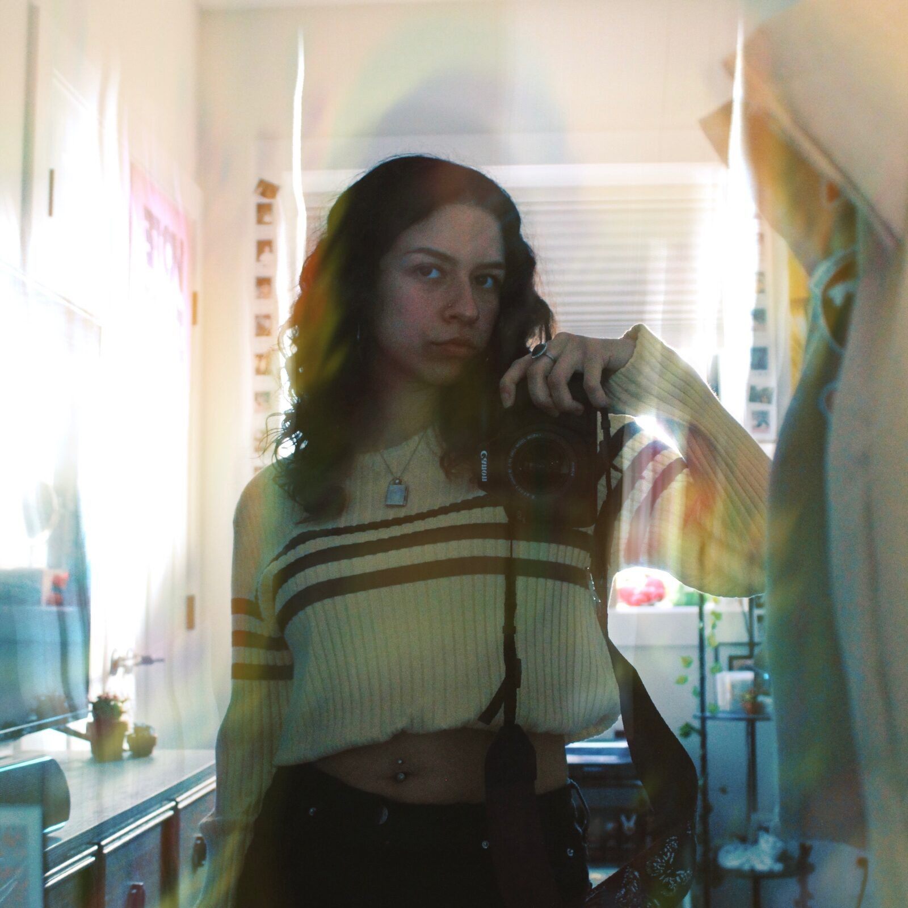

behind the camera
hi, i’m Jocelyn!
I’m a Des Moines based photographer who shoots portraits, concerts, city life, and nature. I like keeping sessions comfortable and easygoing, and I’ll give you clear direction whenever you need it.
Outside of photography, I enjoy listening to music, going to concerts, exploring fashion, and traveling. Those interests often inspire the people, places, colors, and details I notice when I have my camera with me.
Whether we’re planning portraits or documenting a live show, my goal is simple: to create photos you feel confident sharing and happy to look back on.
make something together